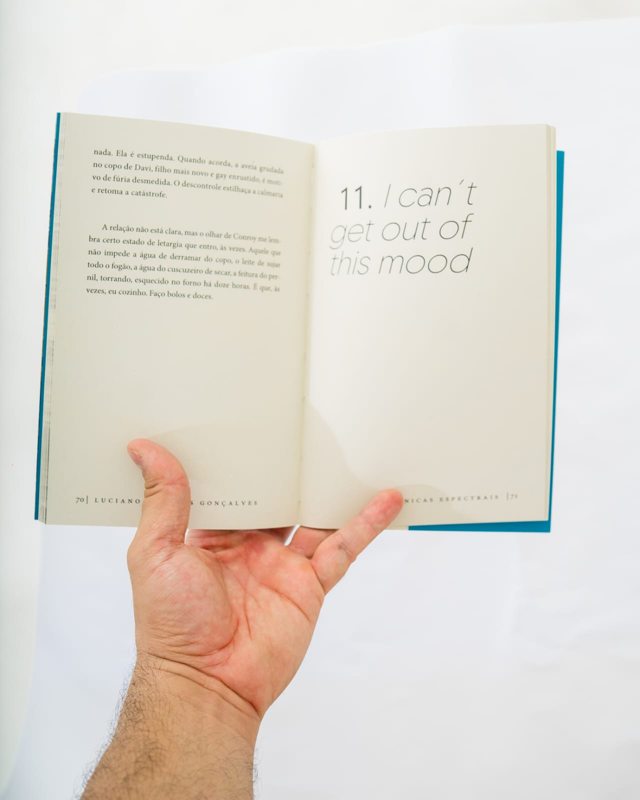

Crônicas Espectrais, notas sobre o TEA
Um livro que mergulha nas nuances do Transtorno do Espectro Autista (TEA) através de crônicas emocionantes e reflexivas.
"Uma leitura emocionante que nos aproxima das experiências vividas no espectro autista."
Feedback do leitor
"Um livro essencial para quem deseja entender melhor o TEA através de uma escrita sensível e cativante."
Feedback do leitor
"Luciano de Jesus Gonçalves nos guia por reflexões profundas, tornando a leitura uma experiência única."
Feedback do leitor

Fotógrafo : Eduardo Lago
Luciano de Jesus Gonçalves
Olá, eu sou o Luciano, professor, pesquisador e autor de Crônicas espectrais, notas sobre o TEA. Este espaço é para você que aprecia literatura, arte, crônicas, música, educação e, claro, a neurodiversidade.
Nos últimos anos, venho compartilhando minha jornada após o diagnóstico tardio de Transtorno do Espectro Autista , um desafio transformador e estimulante. Sinta-se em casa e embarque comigo nessa jornada de descobertas!

Fotógrafo : Eduardo Lago
Tudo bem! Ele é autista!
"Uma visita de cortesia a uma prima me colocou diante de situação curiosa, um almoço com dois desconhecidos, casal de amigos dela. Por vezes, o papo descontraído era interrompido pela senhora que, diante de uma manifestação do marido, reprovava-o e, em cumplicidade comigo, logo eu, soltava a frase: ‘tudo bem! Ele é autista!’
Entre a primeira e, talvez, a quinta, sexta reprimenda conjugal, comecei a traçar na mente uma estratégia para acompanhar o assunto mais de perto, de modo mais empático. A confusão inicial foi tomada pela certeza de que eu estava, sim, diante de um autista.
Mesmo acanhado, não consegui me controlar. Perguntei à esposa se o marido era, de fato, autista. A resposta veio rápida, objetiva, sonora: ‘não! Ele não é autista! É que eu só brinco com ele assim. Estamos juntos há vinte e tantos anos’, calculou um número, orgulhosa.
Surpreso, incrédulo, confuso, soltei um ‘ah, sim’, entre risos amarelados e a conversa seguiu normalmente. Escutei um pouco aquele senhor, negro retinto, 61 anos não aparentados – apesar da barba e dos cabelos brancos –, que me falava sobre o seu trabalho, o esforço para abrir e manter uma empresa, os clientes, a postura nos negócios, pautada na honestidade, afinal de contas, ‘vivia num país extremamente racista e, por isso, era preciso ser honesto’.
Primeira crônica do livro, revela com humor e sensibilidade a descoberta e do autismo através de situações cotidianas. Uma narrativa que convida à reflexão sobre diversidade, autoconhecimento e bem-estar mental. Antes da ideia do livro, meu texto foi publico pela primeira vez no dia 2 de abril de 2024 , data em que se comemora o Dia Internacional da Conscientização do Autismo, no site da jornalista Mariana kotscho .
Gostou deste trecho? O livro completo traz muitas outras histórias como esta!

📖 Descubra um novo olhar sobre o autismo
Em Crônicas Espectrais, Notas Sobre o TEA, você vai se emocionar com relatos autênticos, reflexões profundas e uma visão íntima sobre o universo da neurodiversidade.
Se você busca empatia, conhecimento e uma leitura que toca a alma, este livro é para você.